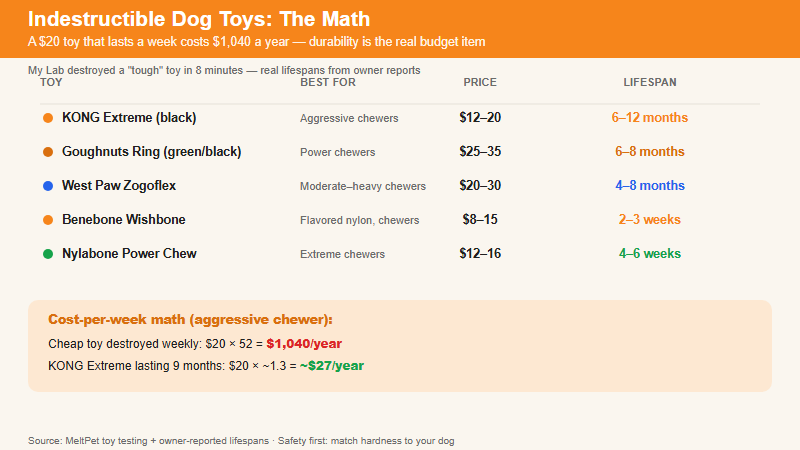

The toys that survive heavy chewers —and the ones that send your dog to surgery. | 2026-07-01 MeltPet 7 min read
Last updated: 2026-07-01
My Lab Destroyed a "Tough" Toy in 8 Minutes. Then I Started Actually Testing.
I have a Labrador. If you have a Lab, or a Pit Bull, or a German Shepherd, or any dog bred to put things in its mouth and apply pressure, you know the ritual. Buy a toy labeled "durable" or "tough" or "indestructible." Give it to your dog. Time it. The plush dinosaur with reinforced seams? 4 minutes. The rope toy with the impressive knot work? 12 minutes before the first strand came off. The "heavy chewer" rubber ball? 8 minutes —and I found half of it under the couch an hour later.
I spent years in the pet food industry, and I've watched dog owners spend more on replacement toys than on their dog's annual vet visit. A $20 toy that lasts a week costs $1,040 a year. Repeat that for a decade and you're looking at a number that makes the expensive toys look cheap.
This guide is organized by material and purpose —not by brand —because the right toy for a Pit Bull isn't the right toy for a Shih Tzu, and the way a toy fails matters as much as how long it lasts.
Category 1: Solid Rubber —The Gold Standard for Most Dogs
Solid rubber toys have been the heavy-chewer default for decades, and for good reason. They're durable but not rock-hard —the material compresses slightly when chewed, which is gentler on teeth than nylon or antlers. They bounce unpredictably, which adds a mental component to fetch. And the hollow ones can be stuffed with food, which turns a chew session into a puzzle.
Toy
Best For
Price
Lasts
KONG Extreme (black)
Aggressive chewers, stuffing with frozen food
$12–20
6–12 months
Goughnuts Ring (green/black)
Power chewers, safety indicator layer
$25–35
6–8 months
West Paw Zogoflex
Moderate-to-heavy chewers, fetch + chew combo
$14–22
6–12 months
JW Pet Hol-ee Roller
Light-moderate chewers, stuffing with fabric strips
$8–12
3–4 months
The KONG Extreme (black rubber, not the red classic version) is the starting point for any heavy chewer. Stuff it with wet food, kibble, or peanut butter, freeze it, and you've bought yourself 30–45 minutes of focused chewing. The Goughnuts ring has a safety feature nobody else offers: a red inner layer underneath the outer rubber. When you see red through wear, you know the toy is done and it's time for a replacement. That alone justifies the higher price —you're not guessing about when the toy has become dangerous.
What to avoid: cheap rubber toys from no-name brands that smell strongly of chemicals. If the toy has a chemical odor when you open it, that smell is going into your dog's mouth. Stick with brands that manufacture in the US or EU with food-grade or FDA-compliant rubber.
Category 2: Nylon Bones —Longer Lasting, Harder on Teeth
Nylon toys last longer than rubber. They're the category for dogs who can destroy a KONG Extreme in a week. The tradeoff is hardness —nylon doesn't compress the way rubber does, so the risk to teeth is higher. For a young dog with healthy teeth who's an extreme chewer, nylon is often the only thing that lasts. For a senior dog or one with existing dental issues, stick with rubber.
Toy
Best For
Price
Lasts
Benebone (wishbone shape)
Aggressive chewers, flavored nylon
$8–15
2–3 weeks
Nylabone Power Chew
Extreme chewers, variety of textures
$10–18
3–4 weeks
KONG Dental Stick
Moderate chewers, dental grooves reduce plaque
$12–16
4–6 weeks
Note the lifespan on these. Nylon toys are not forever toys —they're designed to be gradually worn down by chewing, and the tiny nylon fragments that come off pass harmlessly through the digestive system. When the toy is small enough to be swallowed whole, throw it away. The Benebone's wishbone shape makes it easier for a dog to hold between its paws while chewing, which is a real ergonomic advantage for enthusiastic chewers.
The Nylabone Power Chew line comes in multiple shapes and textures —the ones with raised nubs provide gum stimulation on top of the chewing satisfaction. They're flavored (bacon, chicken, peanut butter) through the material itself, not a surface coating that wears off in 10 minutes. That matters —a flavor that survives the entire life of the toy keeps the dog interested.
Category 3: Puzzle Feeders —Mental Work, Not Just Jaw Work
A heavy chewer's problem is partly physical and partly mental. A dog who destroys toys is often a dog who needs more cognitive engagement. Puzzle feeders address both: they're durable enough to survive chewing and complex enough to tire out a brain.
Toy
Best For
Price
Difficulty
KONG Wobbler
Meal replacement, large breeds
$18–25
Easy
Outward Hound Nina Ottosson (Level 3–4)
Experienced puzzle dogs
$20–35
MediumCHard
Starmark Bob-A-Lot
Adjustable difficulty, all sizes
$15–20
Adjustable
Snuffle mat (fleece)
Light chewers, sniff work
$15–25
Easy
One caveat: most puzzle feeders are not designed to be chewed. They're designed to dispense food while being pushed, rolled, and pawed. A dog who flips the puzzle and starts gnawing on the plastic housing will destroy a $30 Nina Ottosson in minutes. Use puzzle feeders with dogs who understand the assignment —get the food out, don't eat the toy. For dogs who don't distinguish between the two, stick with the KONG Wobbler (thick, food-grade plastic that's harder to destroy) or a snuffle mat (fleece strips on a rubber base —if they tear the fleece you're out $15).
Category 4: Fetch Toys That Don't Disintegrate
Fetch toys have it worse than chew toys. They're thrown, caught at speed, shaken violently, and sometimes fought over by multiple dogs. A fetch toy needs to survive impact forces on top of chewing. The ones that last:
Chuckit! Ultra Ball. $8–12. Dense rubber, high bounce, floats in water. The orange-and-blue standard. Dogs who can destroy a tennis ball in 30 seconds can't destroy this. The rubber is thick enough to survive punctures and the bounce is satisfyingly erratic. One ball lasts most dogs 3–4 months of regular fetch.
West Paw Jive. $12–16. Dishwasher-safe Zogoflex rubber. Floats, bounces, and comes in bright colors you can find in tall grass. If the dog manages to damage it, West Paw recycles it and gives you a discount on a replacement —rare example of a company that actually stands behind "indestructible."
Chuckit! Paraflight. $10–14. For dogs who love catching things in the air but also love destroying them on the ground. The nylon fabric body holds up better than plush, and the rubber edges give it some structural integrity. Not chew-proof —take it away when fetch is over —but it survives the game itself.
Skip: standard tennis balls. The abrasive felt wears down tooth enamel over time. The compressed air inside can be a choking hazard if the dog punctures and collapses the ball. And they're destroyed within minutes by any dog with real jaw strength. If your dog fetches but doesn't destroy, tennis balls are fine. If your dog destroys, the Chuckit! Ultra Ball is $8 and problem solved.
Category 5: Rope Toys —Yes, But Supervised Only
Rope toys serve a purpose: they're great for tug, they floss teeth, and dogs love them. They also shred. The danger is not the rope itself —it's the swallowed strands. Ingested rope fibers can tangle in the intestines and create a linear foreign body, which requires surgery ($2,000–5,000). This is not rare —it's one of the most common foreign-body surgeries, second only to sock ingestion.
If your dog plays tug and doesn't shred, rope toys are fine. Mammoth Cottonblend rope toys ($10–18) are well-made and tightly woven. The knotted ends are dense enough to stand up to real pulling. Take the toy away after tug ends. If your dog lies down and starts pulling individual strands out with front teeth, rope toys are not for your dog —switch to rubber tug toys like the KONG Tug or the West Paw Bumi.
The Danger List: What Sends Dogs to the Emergency Vet
This section matters more than the recommendations above. I've seen the same items show up in veterinary surgery data year after year:
Rawhide. Softens into a gluey mass that can block the intestine. Not digestible despite what the packaging implies. Risk of blockage and choking. Just skip it —there's nothing rawhide does that a rubber chew doesn't do better and safer.
Cooked bones. Splinter. Every time. The splinters perforate intestines. Raw bones are a separate debate, but cooked bones are universally dangerous. Never give a dog a cooked bone from your plate.
Weight-bearing bones from large animals. Femur bones, knuckle bones, marrow bones —these are harder than dog teeth. A fractured carnassial tooth is a $1,500–3,000 extraction. The marrow inside is also extremely rich and causes pancreatitis in susceptible dogs.
Antlers. Harder than bone. Harder than teeth. They last forever because they're made of material your dog literally cannot break down. What breaks is the tooth. Antlers are the most common cause of slab fractures in dogs seen at veterinary dental practices.
Stuffed toys with squeakers. Fine for dogs who carry them gently. For heavy chewers, the squeaker comes out in under a minute and is the perfect size to lodge in a trachea. These are supervised-only toys for dogs with soft mouths.
Toys small enough to swallow whole. Any toy —no matter how durable —becomes a surgical emergency if it's small enough to go down the esophagus. A toy should be large enough that the dog can't get its entire mouth around it. When the toy wears down to a swallowable size, throw it away.
The Cheat Sheet: Match the Toy to the Dog
Dog Type
Go With
Avoid
Monthly Toy Budget
Gentle chewer (carries toys, doesn't destroy)
Plush, rope, standard rubber
Nothing —you have it easy
$5–10
Moderate chewer (wears toys out in days/weeks)
KONG Classic (red), West Paw Zogoflex, Benebone
Plush, thin plastic, rawhide
$10–20
Heavy chewer (destroys regular KONG in weeks)
KONG Extreme, Goughnuts, Nylabone Power Chew
Plush, rope, standard rubber, tennis balls
$15–25
Power chewer (destroys everything, including KONG Extreme)
Goughnuts (black), thick nylon, puzzle feeders for meals
Everything on the danger list above
$20–35
One final rule: supervise any new toy until you know how your dog interacts with it. A toy that survived the neighbor's Pit Bull for two years might be demolished by your Lab in 20 minutes. Dogs chew differently —some grind, some puncture, some shear. The only way to know is to watch.
🛒 Where to find these: The toys in this guide —KONG Extreme, Goughnuts ring, Benebone, Chuckit! Ultra Ball —are sold at Amazon and most pet stores. If your local store doesn't stock Goughnuts (the one with the red safety indicator layer), Amazon carries the full size range. The KONG Extreme is the most widely available of the heavy-duty options —every pet store has it, usually in the black rubber version. For the best price-per-pound on rubber toys, buy the largest size your dog can safely handle; the pricing per ounce drops sharply as sizes go up.

Toy durability is the real budget item — a $20 toy that lasts a week costs $1,040 a year.
📚 Sources
Veterinary dental data, emergency clinic statistics, material safety references.
American Veterinary Dental College (AVDC).Tooth Fracture Guidelines & Chew Toy Hardness Recommendations.
VCA Animal Hospitals (2023).Safety Guidelines for Dog Chews and Toys. vcahospitals.com
ASPCA Animal Poison Control Center.Rawhide and Digestive Obstruction in Dogs.
Veterinary Practice News (2025).Foreign Body Surgery: Most Common Objects Removed from Dogs.
FDA Center for Veterinary Medicine.Pet Food and Treat Safety. fda.gov